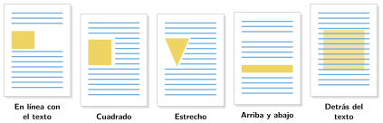

Imágenes, formas, ecuaciones y portada
Criterios: 4a, 4c, 4e
🤔 Pienso10 min
Qué hago aquí: Piensa un momento y contesta con lo que ya sabes. No pasa nada si no lo sabes: es para empezar.
Piensa en un cartel o folleto que recuerdes. ¿Qué tenía además de texto? ¿Qué fue lo primero que viste?
📖 Leo y aprendo40 min
Qué hago aquí: Lee despacio, mira los dibujos y los ejemplos, y quédate con la idea clave del final.
La pestaña Insertar añade al documento todo lo que no es texto escrito:
del equipo o en línea
flechas, cuadros, llamadas
esquemas y procesos
texto en cualquier sitio
fórmulas matemáticas
primera página con diseño
La letra capital (Insertar › Letra capital) agranda la primera letra de un párrafo, como en los libros antiguos. Un cuadro de texto es un recuadro que se coloca donde quieras, con su propio borde y relleno.
Cuando insertas una imagen, Word la pone en línea con el texto, como si fuera una letra más. Para moverla libremente, cambia el ajuste del texto con el botón Opciones de diseño que aparece a su lado:

Con la imagen seleccionada aparece la pestaña Formato de imagen: Recortar, Correcciones (brillo y contraste), Color, Efectos artísticos, Quitar fondo, estilos y bordes. El tamaño se cambia desde las esquinas para no deformarla.
Para escribir fórmulas (como x2 + 1/2 o √(a+b)) se usa Insertar › Ecuación (

+

+
). Y Insertar › Portada añade una primera página ya diseñada, con campos para el título, el autor y la fecha.
✏️ Hago200 min
Qué hago aquí: Haz las actividades en orden. Empieza siempre por las básicas.
Une cada ajuste con su efecto: a) En línea con el texto; b) Cuadrado; c) Detrás del texto; d) Arriba y abajo.
- La imagen queda como fondo.
- El texto la rodea por los cuatro lados.
- Se mueve como una letra más.
- El texto queda solo encima y debajo.
Escribe un párrafo sobre tu animal favorito con letra capital de tres líneas. Inserta una foto con licencia libre, ajuste Cuadrado, recórtala y aplícale un estilo de imagen.
Con Formas, dibuja el organigrama sencillo de la Papelería Sena: gerente, dos dependientes y un administrativo. Rehazlo con SmartArt (Jerarquía). ¿Cuál es más rápido?
Escribe con el editor de ecuaciones: a) x2+y2=r2; b) a+b/2; c) √(16)=4; d) IVA = Base · 0,21.
Haz el folleto de la pizzería Mamma Mía (o de tu empresa): portada con imagen, un cuadro de texto con la oferta, una forma con llamada («¡Nuevo!»), y la carta de pizzas. Usa imágenes con licencia libre.
Añade una portada de Word a un trabajo tuyo y rellena sus campos. Explica qué ventaja tiene frente a hacerla tú desde cero.
🚀 Amplío (si quieres saber más)
Qué hago aquí: ¿Has terminado? Lee la curiosidad o elige el reto. Es voluntario.
Inserta un modelo 3D o un icono (Insertar › Iconos) y cambia su color. ¿Qué diferencia hay entre un icono y una imagen al ampliarlos mucho?
✅ Compruebo10 min
Qué hago aquí: Contesta sin mirar la ficha y marca cómo lo llevas.